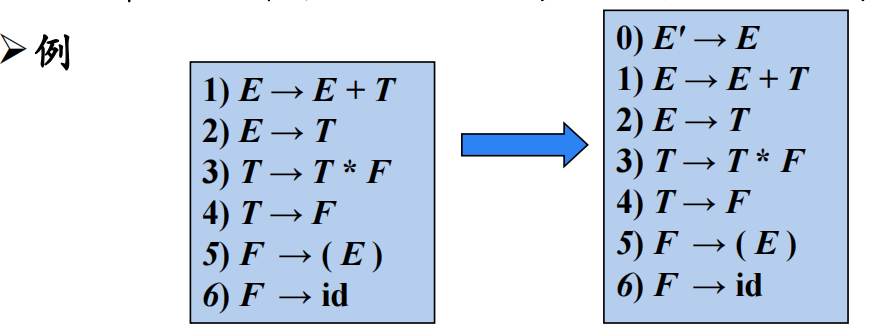
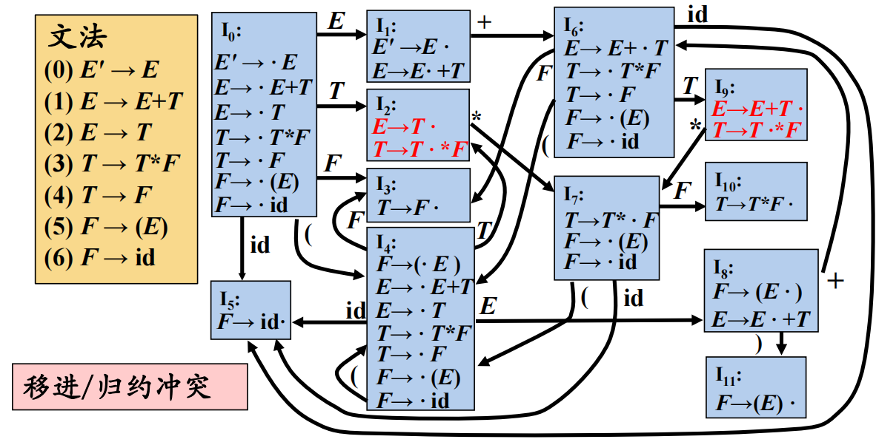
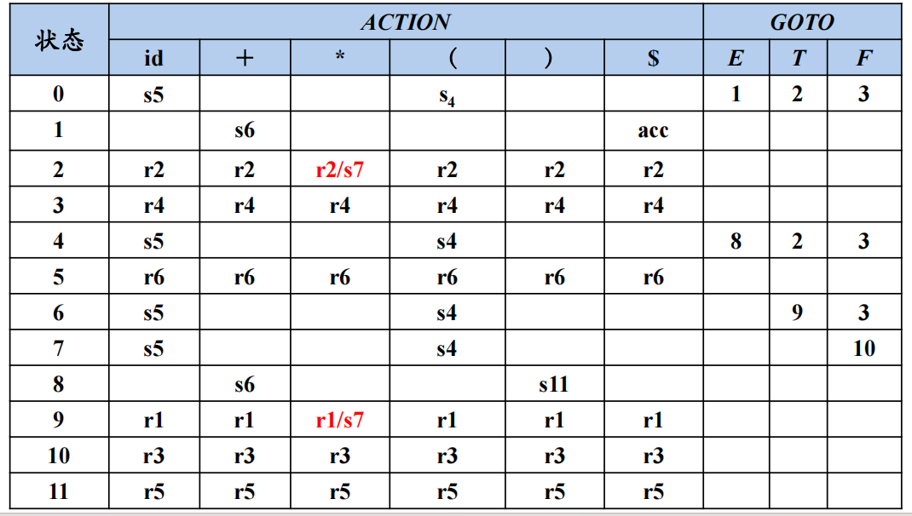

编译原理第6章：自底向上的语法分析
1 自底向上分析概述
从分析树的底部(叶节点)向顶部(根节点)方向构造分析树，可以看成是将输入串w归约为文法开始符号S的过程。
- 自顶向下的语法分析采用最左推导方式
- 自底向上的语法分析采用最左归约方式（反向构造最右推导）
自底向上语法分析的通用框架：移入-归约分析(Shift-Reduce Parsing)。
1.1 移入-归约分析的工作过程
在对输入串的一次从左到右扫描过程中，语法分析器将零个或多个输入符号移入到栈的顶端，直到它可以对栈顶的一个文法符号串β进行归约为止。
然后，它将β归约为某个产生式的左部，语法分析器不断地重复这个循环，直到它检测到一个语法错误，或者栈中包含了开始符号且输入缓冲区为空(当出现这种情况时，语法分析器停止运行，并宣称成功完成了语法分析)为止。
1.2 移入-归约分析器可采取的4种动作
- 移入：将下一个输入符号移到栈的顶端
- 归约：被归约的符号串的右端必然处于栈顶。语法分析器在栈中确定这个串的左端，并决定用哪个非终结符来替换这个串
- 接收：宣布语法分析过程成功完成
- 报错：发现一个语法错误，并调用错误恢复子例程
移入-归约分析中存在的问题：如何正确地识别句柄？
2 LR分析概述
LR文法（Knuth, 1963）是最大的、可以构造出相应移入-归约语法分析器的文法类。
- L：对输入进行从左到右的扫描
- R：反向构造出一个最右推导序列
LR(k)分析：需要向前查看k个输入符号的LR分析。其中， 和 这两种情况具有实践意义，当省略(k)时，表示k =1。
2.1 LR 分析法的基本原理
自底向上分析的关键问题是如何正确地识别句柄，句柄是逐步形成的，用“状态”表示句柄识别的进展程度。
2.2 LR 分析器（自动机）的总体结构
2.3 LR 分析器的工作过程
2.4 LR分析算法
如何构造给定文法的LR分析表？
- LR(0)分析
- SLR分析
- LR(1)分析
- LALR分析
3 LR(0)分析
右部某位置标有圆点的产生式称为相应文法的一个LR(0)项目（简称为项目）。
3.1 增广文法
如果是一个以为开始符号的文法，则的增广文法就是在中加上新开始符号和产生式而得到的文法。

引入这个新的开始产生式的目的是使得文法开始符号仅出现在一个产生式的左边，从而使得分析器只有一个接受状态。
3.1.1 后继项目
同属于一个产生式的项目，但圆点的位置只相差一个符号，则称后者是前者的后继项目。
的后继项目是。
上述15个项目中是否会有某些项目是等价的？
可以把等价的项目组成一个项目集(I)，称为项目集闭包（Closure of Item Sets），每个项目集闭包对应着自动机的一个状态。
3.2 LR(0)自动机
3.3 移进规约冲突

表达式文法的LR(0)分析表含有移进/归约冲突：

如果LR(0)分析表中没有语法分析动作冲突，那么给定的文法就称为LR(0)文法。
不是所有CFG都能用LR(0)方法进行分析，也就是说，CFG不总是LR(0)文法。
4 SLR分析
SLR(1)分析法的基本思想：看要规约项目的FOLLOW集中是否包含输入的符号。
4.1 SLR(1) 分析表构造算法
如果给定文法的SLR(1)分析表中不存在有冲突的动作，那么该文法称为SLR(1)文法。
5 LR(1)分析
5.1 LR(1)分析法的提出
SLR(1)分析存在的问题：
SLR(1)只是简单地考察下一个输入符号b是否属于与归约项目A→α相关联的FOLLOW(A)，但b∈FOLLOW(A)只是归约α的一个必要条件，而非充分条件。
对于产生式 A→α的归约，在不同的使用位置，A会要求不同的后继符号。
在特定位置，A的后继符集合是FOLLOW(A)的子集。
5.2 规范LR(1)项目
将一般形式为 [A→α·β, a]的项称为 LR(1) 项，其中A→αβ 是一个产生式，a 是一个终结符(这里将$视为一个特殊的终结符)它表示在当前状态下，A后面必须紧跟的终结符，称为该项的展望符(lookahead)。
- LR(1)中的1指的是第二个分量的长度
在形如[A→α·β, a]且β ≠ ε的项中，展望符a没有任何作用，但是一个形如[A→α·, a]的项在只有在下一个输入符号等于a时才可以按照A→α 进行归约。
这样的a的集合总是FOLLOW(A)的子集，而且它通常是一个真子集。
6 LALR分析
6.1 LALR(lookahead-LR)分析的基本思想
寻找具有相同核心的LR (1) 项集，并将这些项集合并为一个项集。 所谓项集的核心就是其第一分量的集合。
然后根据合并后得到的项集族构造语法分析表，如果分析表中没有语法分析动作冲突，给定的文法就称为LALR(1)文法，就可以根据该分析表进行语法分析。
合并同心项集后，虽然节省了空间，也不产生冲突，但可能会推迟错误的发现，同时LALR分析法可能会作多余的归约动作，但绝不会作错误的移进操作。
6.2 LALR(1)的特点
- 形式上与LR(1)相同
- 大小上与LR(0)/SLR相当
- 分析能力介于SLR和LR(1)二者之间，即
- 合并后的展望符集合仍为FOLLOW集的子集
7 二义性文法的LR分析
每个二义性文法都不是LR的，某些类型的二义性文法在语言的描述和实现中很有用。

二义性文法的使用：
应该保守地使用二义性文法，并且必须在严格控制之下使用，因为稍有不慎就会导致语法分析器所识别的语言出现偏差。
8 LR分析中的错误处理
语法错误的检测：
当LR分析器在查询分析表并发现一个报错条目时，就检测到了一个语法错误。
错误恢复策略：
- 恐慌模式错误恢复
- 短语层次错误恢复
8.1 恐慌模式错误恢复
从栈顶向下扫描，直到发现某个状态，它有一个对应于某个非终结符A的GOTO目标，可以认为从这个A推导出的串中包含错误。
然后丢弃0个或多个输入符号，直到发现一个可能合法地跟在A之后的符号a为止。
之后将压入栈中，继续进行正常的语法分析。
8.2 短语层次错误恢复
检查LR分析表中的每一个报错条目，并根据语言的使用方法来决定程序员所犯的何种错误最有可能引起这个语法错误，然后构造出适当的恢复过程。
8.2.1 带有错误处理子程序的算术表达式文法LR分析表
8.3 自底向上语法分析小结
 微信
微信 支付宝
支付宝